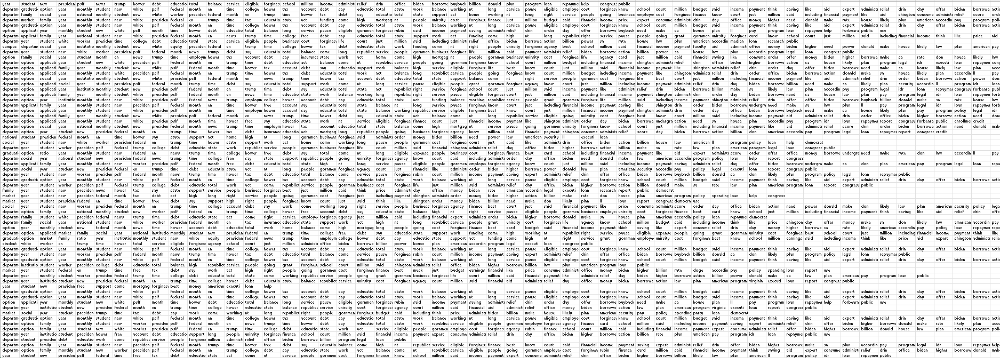

| source | url | article | source_bias | Bias Numeric | Bias Specific | author | description | date | title | search |
|---|---|---|---|---|---|---|---|---|---|---|
| Loading ITables v2.2.5 from the internet... (need help?) |
Association Rule Mining (ARM)
Overview
Association Rule Mining (ARM) is a technique used to find and quantify relationships within sets, specifically the occurrence of events together. Relationships are represented by rules, which are direction based implications of subsets. In other words, probabilistically quantifying if and how much a set or subset implies another set or subset.
\(Rule: consequent \rightarrow antecent\)
The main quantifying measures of cooccurence are:
- Support: the proportion of an item or set of items occuring together out of the entire dataset.
- Range: [0, 1]
- Confidence: quantifies the likelihood an itemset’s consequent occurs given its antecent (conditional probability of a consequent occurring giving its antecent).
- Range: [0, 1]
- Lift: assesses the performance of an association rule by quantifying an improvement (or degradation) from the initial prediction, where the initial prediction is the support of the antecent.
- Lift < 1: indicates a negative correlation, or the rules are simply uncorrelated.
- Lift = 1: indicates independence between the rules, absolutely no correlation. If something is everywhere, it is nowhere. If an item is in every single set as antecedent, lift will always be 1.
- Lift > 1: indicates a positive correlation, or improvement of the initial rule. This shows a valid association. A high lift value inidcates that the association rule is more significant, the itemsets are highly dependent on each other.
Formulas
Support for a Single Itemset
\[Support(I) = \frac{\text{number of sets containing I}}{\text{total number of sets}}\]
Support for an Association Rule
\[Support(A \rightarrow C) = \frac{\text{number of sets containing A and C}}{\text{total number of sets}}\]
Confidence for an Association Rule
\[Confidence(A \rightarrow C) = \frac{\text{number of sets containing A and C}}{\text{proportion of sets containing A}}\]
\[Confidence(A \rightarrow C) = P(C|A) = \frac{P(CA)}{P(A)}\]
Note: the intersection is not the traditional probability definition of intersection, but that it contains every element in itemsets A and C.
Lift for an Association Rule
\[Lift(A \rightarrow C) = \frac{Confidence(C \rightarrow A)}{Support(C)} = \frac{Support(C \rightarrow A)}{Support(C)Support(A)}\]
ARM is another unsupervised machine learning method. The goal is to explore the data further and gain information by examining associations. The goal is to use the NewsAPI news articles and one of the Reddit schemas in an attempt to better understand what is being discussed.
Data Preparation
Following the analysis performed in Clustering section, NewsAPI data from the 3-Topic Iterative LDA wordset and Reddit data from the Reddit Author Aggregation Schema 3-Topic Iterative LDA wordset will be used.
Transaction data is a format of data which differs from the classic record data. Each row is a comma separated list of unique items (words in this case) from a single transaction (text document in this case). When this is represented in a comma separated value (csv) file, there can be a different number of columns throughout the rows. Snippets of the prepared data are shown below, but the full transaction type datasets can be found here.
NewsAPI Data Before Transformations
Reddit Data Before Transformations
| url | title | subreddit | author | original_author | author_upvotes | author_dates | author_content | author_content_aggregated | replies_to | replies_from |
|---|---|---|---|---|---|---|---|---|---|---|
| Loading ITables v2.2.5 from the internet... (need help?) |
NewsAPI Transaction Data Snippet

Creating Rules
When rules are initially created, a balance of minimum confidence and minimum support need to be specified. This has to be done with computational efficiency and desired number of rules in mind.
NewsAPI
Rules were created with:
- Minimum Support: 0.3
- Minimum Confidence: 0.6
- Rules Created: 33,349
Rules were created with:
- Minimum Support: 0.05
- Minimum Confidence: 0.2
- Rules Created: 232
Results
NewsAPI Top Support
| rules | support | confidence | coverage | lift | count |
|---|---|---|---|---|---|
| Loading ITables v2.2.5 from the internet... (need help?) |
NewsAPI Top Confidence
| rules | support | confidence | coverage | lift | count |
|---|---|---|---|---|---|
| Loading ITables v2.2.5 from the internet... (need help?) |
NewsAPI Top Lift
| rules | support | confidence | coverage | lift | count |
|---|---|---|---|---|---|
| Loading ITables v2.2.5 from the internet... (need help?) |
Reddit Top Support
| rules | support | confidence | coverage | lift | count |
|---|---|---|---|---|---|
| Loading ITables v2.2.5 from the internet... (need help?) |
Reddit Top Confidence
| rules | support | confidence | coverage | lift | count |
|---|---|---|---|---|---|
| Loading ITables v2.2.5 from the internet... (need help?) |
Reddit Top Lift
| rules | support | confidence | coverage | lift | count |
|---|---|---|---|---|---|
| Loading ITables v2.2.5 from the internet... (need help?) |
Networks
News Article Network
Due to a large amount of rules even with relatively high minimum thresholds, a network was visualized in a manner which illustrated different angles. Taking rules with Lift > 1 (valid assocations), the 5 top rules by Lift from each quartile form the network.
Conclusions
Although words like “loan” and “student” were both prevalent in each network, the news articles compared to the Reddit posts formed overall different networks. Even with the news articles’ network formed via different quartiles of the top Lift, there were high assocaitions around government talk. There were high associations with the last two presidents (“biden” and “trump”). The word “white” as a consequent of antecents with rules containing “house” and “administration”. Additionally, the word “program” mentioned quite a bit with the antecendents of both “biden” and “trump”, likely indicating the discourse of the student debt relief programs. Whereas the news articles were more associated with government entities, the Reddit associated were more associated with the word “student” itself. Almost everything in the highest valid assocations focused around the entity of the student itself. Antecents of “student” included financial indicators like “loan”, “pay”, and “payment”, as well as time components like “year”.
In summary, there is evidence which indicates that the news articles speak mostly about government entities while the Reddit posts speak mostly about the student entity itself.